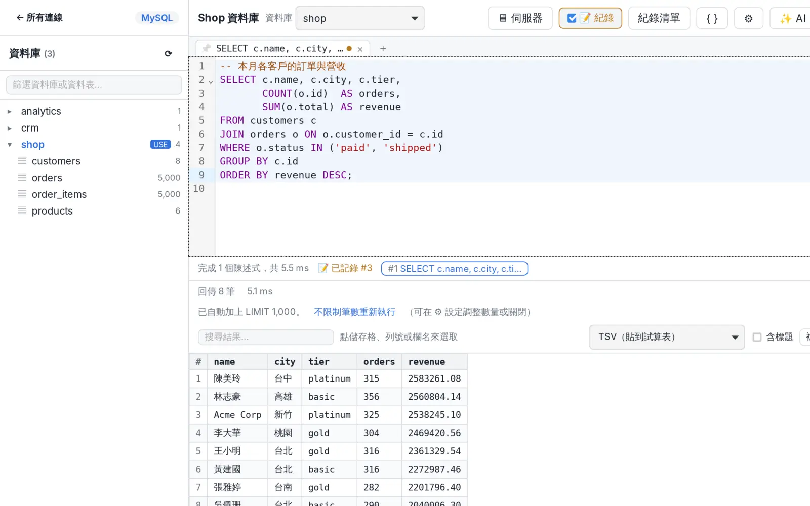

連線
- SSL/TLS 四種模式，對應 mysql 的
--ssl-mode - 雲端預設：AWS RDS / Aurora、Google Cloud SQL、Azure；Redis 有 ElastiCache / MemoryDB、Memorystore
- SSH 通道，第一次連線記住跳板機金鑰指紋，之後不符就拒絕
- 閒置斷線後自動重連（含 SSH 通道），保留
USE的資料庫
MyDB Studio 用 Rust + Tauri 2 打造，連線、查詢、管理伺服器都在同一個視窗；AI 只跑在你自己的電腦上，也能透過 MCP 讓 Claude 等工具安全地使用你存好的連線。

日常查詢到伺服器管理，常用的事情都放在順手的位置。
--ssl-modeUSE 的資料庫${欄位} 用 Tab 依序填=、+、-、@ 開頭的文字會先加上 'CONVERT 所有資料表ALTER TABLE 先預覽SCAN 分批載入 key，依冒號前綴分組KEYS、FLUSHALL 等危險指令先確認AUTH 的密碼一律遮蔽mydb-studio --mcp 讓 Claude 等 AI 工具用存好的 MySQL / MariaDB 連線查詢資料庫裡的東西很重要，所以預設值都往保守的方向走。
預設由 app 在本機啟動 llama.cpp 的 llama-server，只聽 127.0.0.1，資料不會送到雲端服務。若你已經自己架好 llama.cpp 伺服器，也可以在設定裡改用它。
連線密碼、SSH 密碼與金鑰密語存在系統鑰匙圈，app 資料庫只保存不含密碼的連線設定。密碼也只會交給原本設定的主機。
唯讀連線只接受 SELECT、SHOW、DESCRIBE、EXPLAIN，並在唯讀交易中執行作為第二道防線。要開放寫入必須逐一連線手動設定；Redis 連線不提供給 MCP。
App 鎖定時，MCP server 會拒絕所有工具呼叫，直到你用 Touch ID 或登入密碼解鎖；即使 app 異常結束，也會依設定保持鎖定。
以示範資料截圖，點圖片可以看大圖。
核心邏輯與 UI 分開，桌面 app 和 MCP server 共用同一套程式碼。
Rust：連線、SSH 通道、查詢、SQL 分句、本機 SQLite（crates/mydb-core）
Tauri 2，把核心包成前端可呼叫的指令（src-tauri）
React + TypeScript，CodeMirror 編輯器（src）
llama.cpp 本機模型；MCP（JSON-RPC over stdio，crates/mydb-mcp）
macOS 版已經用 Developer ID 簽章並通過 Apple 公證。
# 取得原始碼 $ git clone https://github.com/jackiewu/mydb-studio.git $ cd mydb-studio # 安裝相依套件 $ npm install # 開發模式 $ npm run tauri dev # 打包安裝檔 $ npm run tauri build # 測試 $ cargo test --workspace $ npm test